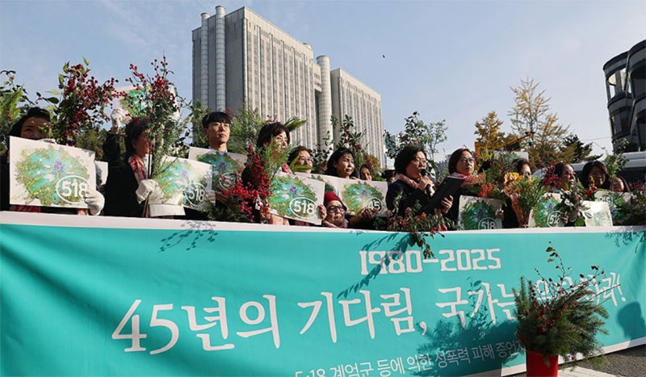

입법지원센터
법무법인 율립은 법의 해석·적용을 넘어 입법적 대안까지 함께 모색합니다.
개인의 권리구제와 피해회복, 공정한 사회를 위한 법적 기반을 법령·규칙의 제정·개정을 통해 마련합니다.
입법지원센터 소개
함께, 법을 세웁니다. 법무법인 율립
개인이나 단체, 기업이 직면한 법적 환경의 현황을 파악하고, 이를 개선하거나 유리한 법적 기반을 마련하기 위한 전문적인 종합 컨설팅을 제공합니다. 고객들과 충분한 소통을 바탕으로 법률 및 시행령, 각종 시행규칙, 조례의 제정·개정·폐지에 대해 전문적 입장과 풍부한 네트워크를 통해 전략적으로 대응하여 현실화 합니다.
주요 업무 내용
- 국회 및 정부 부처에서 발의되거나 논의 중인
법률, 시행령, 시행규칙, 조례 등의 제·개정 동향 모니터링 및 분석 - 해당 입법안이 미칠 영향 예측 분석 및 법리 분석과 입법례 검토 등을 통한 전략 수립
- 법령안 작성 및 공청회, 청문회, 전문가 간담회, 정책토론회 등 입법과정 대응·참여
- 정부 내 관계기관 협의, 규제 심사, 심의 등 행정부 절차와
국회 내 상임위원회 심사, 법제사법위원회 심사 등 모든 단계에 대한 자문 제공 - 유권해석 질의, 공감 방안 마련
입법 사례

「5·18민주화운동 관련자 보상 등에 관한 법률」 (2026. 7. 1. 시행 예정)
5·18 광주민주화운동 성폭력 피해자들의 보상방안 마련
5·18 성폭력 피해 증언자 모임 ‘열매’
「학교급식법」 (2026. 1. 29. 국회 본회의 통과)
학교급식을 교육의 일환임을 규정하고, 학교급식 종사자의 정의를 법적으로 규정하고, 학교 급식 노동자의 적정 식수 인원 기준을 정부가 정해 각 시도교육청이 배치 기준을 수립할 것을 명시